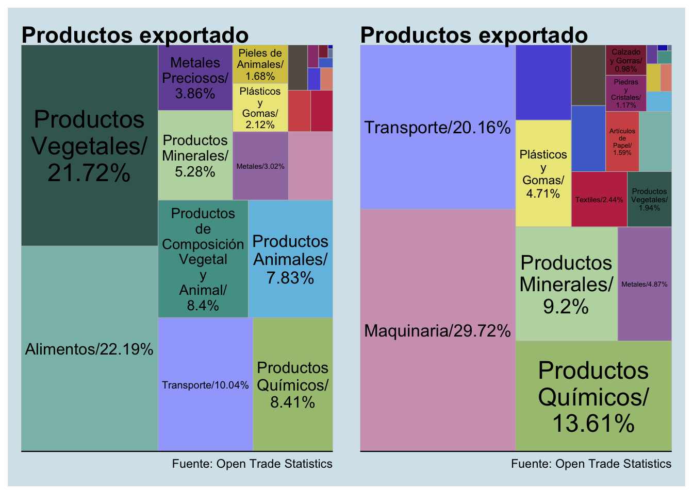

En este post el objetivo es analizar un poco más especifico sobre el comercio exterior de Argentina.
La economía argentina está fuertemente vinculado a los flujos de exportaciones y importaciones, ya que, como Bernat (2011) resalta, Argentina alinea al modelo económico de “stop and go” de continuamente ciclos de expansiones económicos seguido a rececesiones.
El modelo “stop and go” implica que en una economía donde las exportaciones de principalmente productos agropecarios está estagnados y el desarrollo industrial necesario para sostener el crecimiento no existe, la economía va cada vez más a demandar importar productos no producido internamente.
La fuerte dependencia de importaciones con el tiempo genera un déficit comercial, lo cual tiende a ser corregido con una devalución de la monera local. Debido al hecho de que tantos productos internas están conectados al tipo de cambio porqué son importados disminuye el poder adquisitivo local. Eso disminuye el consumo local y reduce el nivel de importación. Al mismo tiempo, las exportaciones no se afectan por la bajada. Eventualmente, eso llegaría a una nueva expansión ecónomica.
En Argentina durante los 2000s, el tipo de cambio se mantuvo artificalmente devalorado con el objetivo de generar condiciones favorables para las exportaciones (Kulfas, 2016). No obstante, Bernat (2011) resalta que eso generó un aumento en la demanda de mano de obra poco cualificada, mientras que lo que realmente se necesitaba era un aumento en la demanda de mano de obra más cualificado para entender sacar el país de la trampa del medio ingreso (Bernat, 2011).
Este post trata de analizar algunas de las muchas dinamicas que existen en el comercio exterior. Está divido en tres analisis diferentes:
Un analisis de la evolución histórico del comerico exterior argentino.
Un analisis sobre hacia donde van las exportaciones argentinas: el región de América Latina o el resto de mundo.
Una analisis mostrando la composición de los productos más exportados y importados en Argentina en 2017.
Las librarias utilizadas
library(tidyverse)
library(ggplot2)
library(tradestatistics)
library(treemapify)
library(ggthemes)
library(scales)
library(patchwork)
Evitando el error de "“summarise() ungrouping output (override with .groups argument)” de la nueva versión de dplyr:
library(dplyr, warn.conflicts = FALSE)
# Suppress summarise info
options(dplyr.summarise.inform = FALSE)
Evolución historica del comercio exterior argentino
Descargando los datos
En primer lugar, descargo la información de Open Trade Statistics el comercio exterior argentino desde 1980 hasta 2018. Con el comando de “reporters =”arg"" filtro así que solamente descargo información sobre Argentina.
En segundo lugar, eligo los datos necesarios para realizar el analisis summando el valor en USD de las exportaciones y las importaciones de cada año:
argentina_comercio <- tradestatistics::ots_create_tidy_data(
years = 1980:2018,
reporters = "arg",
partners = "all",
products = "all")
Graficando
Ahora puedo graficar:
ggplot(argentina_comercio) +
geom_line(aes(x = year,
y = export_value_usd),
color = "purple") +
geom_line(aes(x = year,
y = import_value_usd),
color = "red") +
labs(
x = NULL,
y = NULL,
title = "Comercio Exterior de Argentina (1980-2018)",
caption = "Fuente: Open Trade Statistics") +
scale_y_continuous(labels = scales::dollar_format()) +
theme_economist() +
theme(
plot.title = element_text(size = 14),
legend.position = "bottom")

Sum-up
En primer lugar, se nota como Argentina ha seguido el desarrollo del resto de la región como analicé en el primero post sobre comercio exterior general de la región: durante la década de los 1980s los flujos de tanto importaciones (rojo) y exportaciones (lilla) son más o menos al mismo nivel. Después en los 1990s con las liberalizaciones y aperatura económica aumentan ambos flujos.
En segundo, es llamativa como el flujo de importaciones caye mucho más drámatico a través de la crisis de 2001 que el flujo de exportaciones. Después durante la última mitad de los 2000s se nota como el boom de los commodities impuja especialmente el nivel de las exportaciones hacia arriba. Hacia nivels de la última parte de los 2010s, ambos flujos caye de nuevo, pero vale notar todavía son mucho más altos que durantes los 1990s.
¿Argentina se exporta más hacia América Latina o el resto del mundo?
En esta segunda parte del post, me interesa analizar si los flujos de exportación de Argentina en los últimos años han ido más hacia América Latina o hacia el resto del mundo. Así se puede determinar donde se debería focusar iniciativas de mejorar las exportaciones.
Descargando los datos
Para este parte eligí utilizar el base de datos de Datos de Miércoles de mayo 2019, ya que tenía ciertos problemas de “newbee” en utilizar el API de Tradestatistics y no encontré como podría llegar a cargar la informar sobre los países destinos de las exportaciones. Por lo tanto, era dificíl dividirlo.
Entonces, para este analisis utilicé el base de datos de Datos de Miercoles, que ya viene con la información sobre los países destinos.
Primero, filtro por Argentina como el país de origen de las exportaciones (utilizando el codigo ISO de origen para hacer eso). Segundo, genero una nueva variable dummy que domina si el país de destino pertenece a América Latina o no (si pertenece se domina con 1, si no se domina con 0). Después se grupea por region y año, y por ultimó se suma el valor total en USD de las exportaciones:
comercio_mundo <- readr::read_csv("https://raw.githubusercontent.com/cienciadedatos/datos-de-miercoles/master/datos/2019/2019-05-01/comercio_hispanoamerica_mundo_agregado.csv")
comercio_arg <- comercio_mundo %>%
filter(codigo_iso_origen == "arg") %>%
mutate(
region = ifelse(pais_destino_pertenece_a_hispanoamerica == 1, "América Latina", "Resto del mundo")) %>%
group_by(anio,
region) %>%
summarise(
valor_exportado_dolares = sum(valor_exportado_dolares, na.rm = T))
Graficando
Ahora bien, se grafica la cantidad de USD exportado hacía América Latina y hacía el resto del mundo por año:
ggplot(data = comercio_arg,aes(x = anio, y = valor_exportado_dolares, fill = region)) +
geom_col(position = "dodge2") +
labs(
x = NULL,
y = NULL,
title = "Exportaciones de Argentina por region") +
scale_y_continuous(labels = scales::dollar_format()) +
theme_economist() +
theme(legend.position = "bottom",
legend.title = element_blank(),
legend.text = element_text(size = 10))

Sum-up
Está claro que la mayoría de las exportaciones de Argentina va hacia el resto del mundo. Además se nota como las exportaciones de ambos categória ha ido disminuyendo desde 2013 hasta 2017, lo cual se relaciona con lo encontrado en el primer analisis.
No obstante, también sería interesante averiguar qué las categoría de productos que se exporta más desde Argentina:
Comercio exterior por categoría de producto
En esta última parte del analisis, querría investigar qué productos se ha exportado más desde Argentina en 2017.
Utilizo el mismo data frame que en el segundo analisis, ya que facilita el trabajo, pero también podría haber hecho como en el analisis de importaciones y uniendo varias data frames de la base orginal de Open Trade Statistics.
Exportaciones
Graficando
Ahora con esta información puedo graficar utilizando ggplot y treemap para mostar el procentage de cada categoría de productos que la Argentina exportó durante 2017:
grafico_export_2017 <- ggplot(export_argentina_2017, aes(
area = valor_exportado_dolares,
fill = nombre_comunidad_producto,
label = etiquetas)) +
geom_treemap() +
geom_treemap_text(color = "black",
place = "centre",
grow = F,
reflow = T) +
scale_fill_manual(values = export_argentina_2017$color_comunidad_producto) +
labs(title = "Productos exportado",
caption = "Fuente: Open Trade Statistics") +
theme_economist() +
theme(legend.position = "none")
grafico_export_2017

Importaciones
Ahora me interesa ver como se distribuye las importaciones por categoría de productos para después poder comparar los dos.
Graficando
Lo mismo para poder genera el grafico; el código es el mismo pero cambio la variable:
grafico_import_2017 <- ggplot(import_argentina_2017, aes(
area = valor_importado_dolares,
fill = nombre_comunidad_producto,
label = etiquetas)) +
geom_treemap() +
geom_treemap_text(color = "black",
place = "centre",
grow = F,
reflow = T) +
scale_fill_manual(values = import_argentina_2017$color_comunidad_producto) +
labs(title = "Productos exportado",
caption = "Fuente: Open Trade Statistics") +
theme_economist() +
theme(legend.position = "none")
grafico_import_2017

Comparación
Tengo la liberaría “patchwork” cargada, lo cual me permite mostrar los dos graficos uno al lado del otro con este fácil código:
grafico_export_2017 + grafico_import_2017

Sum-up
En primer lugar, esta claro que lo que más exportó Argentina en 2017 era productos agropecarios de productos vegetales (21,72 %), productos de composición vegetal y animal (8,40 %), y productos animales (7,83 %). Eso solo llegaría a un total de 37,95 %. A eso es puede sumar la categoría de alimentos (22,19 %). Obviamente, habrá que ver que incluye especificamente la categoría de alimentos, pero más probable es un alto porcentaje de productos agropecarios procesados. Esas 4 categorías en conjunto llegaría a un total del 60,14% de las exportaciones argentinas. Obviamente, se podría haber hecho modificaciones en data frame para juntar esas 4 categorías en una sola de productos agropecarios (pero entonces, nunca terminaría con este proyecto :) )
En segundo lugar, lo más importado en Argentina en 2017 era en primer lugar productos maquinas (29,72%) y vehiculos relacionados al transporte (20,16 %) y en segundo lugar productos químicos (13,61 %) y minerales (9,20 %). Es llamativa que esas industrias también aparece en el grafico el las exportaciónes. Es decir, ya productos de los mismos sectores que tanto se importa para después ser exportados. Sería interesante hacer un analisis más profundo de este fenonemo - pero será para otro proyecto :)
Este breve analisis de los flujos de comercio exterior argentina, se nota la tendencia subrayado por varios autores de que los países de América Latina tiende a exportar recursos naturales extraidos de la tierra o productos agropecarios y importar productos ya manifacturados y de alta tecnología. Unos de los principales argumentos de la trampa del medio ingreso es que los países de América Latina necesitan desarrollar su ventaja competitiva en otros areas que la agricultura y la fabricación de alimentos, y entrar en las industrias de alta tecnología y donde se necesita más habilidades. Para entonces puede vender eso productos más caros en el mercado global y fortalecer el nivel educativo de sus poblaciones.
References
- Bernat, Gonzalo (2011). “Crecimiento en la Argentina: del stop and go al go (slowly) non stop”, Boletín Informativo Techint 335
- Kulfas, Matías (2016). L os tres Kirchnerismos - Una historia de la economía argentina, 2003-2015.- 1a ed.- Buenos Aires: Siglo Veintiuno Editores.